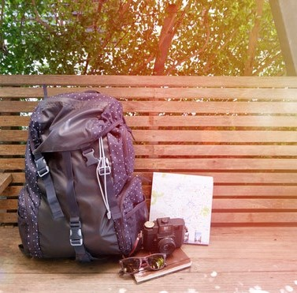

Backpackers essentials

Nowadays, there were a lot of people tend to choose backpacking
method of traveling as it is more convenient rather than bring big luggage.
Usuall for a bagpacker, they tend to bring important things only as they don't want to have a heavy bag
during their journey as heavy bag will restraint their movement.
1. Comfortable Clothes
It is important for the traveller to wear comfortable clothes so they can move easily and happily.
How to choose suitable clothes? Firstly, must be thin but not too thin, so that the cloth will be dry easily
and the traveller does not have to bring many piece of attire. Secondly, strictly no tight clothes, you need to wear
something that for surely help you breath and move easily.
2. Toiletries
Don't forget to bring your shower gel, shampoo, facial cleanser, tooth brush and etcetra. If you did not
take care of your personal hygiene no one will be friend with you and if you really hygienic person don't bring
your house together with you. Just put everything in small bottles. It will help you save pretty lot of space.
3. Medicine
Do you know your own body condition for good? Not really right? So do bring medicine for your own good.
If you have such bad condition of health, you don't have any choice but to bring your tablets anywhere you go.
However, for those who think their body system in such a good condition you might need to think twice as sick
do not come with a warning sign. It just come without notice and go with the wind.
4. Foods & Beverages
Where do you plan to go? Overseas or just local? If overseas, for muslims they need to study about food that they can
and could not eat and if local, you need to really take a good care of your budget. And how can you take care of it?
Its easy, just bring some sort of food that you think might save you from starving such as instant noodles, bread, instant porridge
and etcetra. It will really help you to save some of your budget and definitely kill your hunger.
So thats it. Happy travel.